Section 02
Data Preparation & EDA
Data Source, cleaning techniques, and exploration results
Data sources
Two free, publicly available sources were used. The official IMDb API was considered first but ruled out —> it is an enterprise product distributed exclusively through AWS Data Exchange, with entry pricing around $150,000/year, and there is no free public tier. The two sources below are the legitimate free alternatives used instead.
1. IMDb Non-Commercial Datasets
Official IMDb data, free for personal and non-commercial use, refreshed daily.
| Field | Value |
|---|---|
| Website | developer.imdb.com/non-commercial-datasets |
| Direct file host | datasets.imdbws.com |
| Files used | title.basics.tsv.gz, title.ratings.tsv.gz, title.akas.tsv.gz, title.crew.tsv.gz, name.basics.tsv.gz |
| License | Personal / non-commercial use only — processed data is kept local, not redistributed |
Direct links to the exact files pulled: title.basics.tsv.gz · title.ratings.tsv.gz · title.akas.tsv.gz · title.crew.tsv.gz · name.basics.tsv.gz
2. OMDb API
Used to enrich a sample of titles with fields the bulk datasets don't include: country, language, and full release date.
| Field | Value |
|---|---|
| Website | omdbapi.com |
| Core endpoint | https://www.omdbapi.com/ |
| Example GET request | https://www.omdbapi.com/?i=tt0111161&apikey=YOUR_KEY |
| License / tier | Free tier — 1,000 requests/day, non-commercial use |
Collection & cleaning methodology
title.basics alone contains tens of millions of rows spanning every title type IMDb tracks (TV episodes, shorts, video games, etc.), so it was read and filtered in memory-bounded chunks rather than loaded all at once, keeping only feature-length movies released in 1970 or later. This was merged with title.ratings on the shared title identifier (tconst) to produce the raw dataset below.
# Core filtering logic used while streaming through title.basics.tsv.gz in chunks
movies = chunk[(chunk["titleType"] == "movie") & (chunk["isAdult"] == "0")]
movies["startYear"] = pd.to_numeric(movies["startYear"], errors="coerce")
movies = movies[movies["startYear"] >= 1970]
# Merged with ratings on the shared IMDb title ID
raw_df = basics.merge(ratings, on="tconst", how="inner")
# Example OMDb enrichment call — tconst IS the IMDb ID, so no title-matching needed
resp = requests.get("https://www.omdbapi.com/", params={"i": tconst, "apikey": API_KEY})
From the raw merge, rows missing runtime, year, or genre were dropped, titles with fewer than 100 votes were excluded (to stop obscure titles with a handful of votes distorting averages), and runtimes outside a 40–300 minute range were dropped as likely data errors or non-feature content. Because the full cleaned catalog still ran into the hundreds of thousands of rows; more than a standard notebook environment can comfortably hold in memory alongside the subsequent full-file scans of title.akas and name.basics. The cleaned dataset was reduced to a stratified random sample of 30,000 movies, drawn evenly across each decade from 1970 onward. This is a deliberate choice to keep the dataset representative across time rather than skewed toward the much larger volume of recent releases, not an artifact of the analysis breaking down.
Raw data vs. cleaned data
A small sample of rows, shown before and after cleaning.
Before cleaning
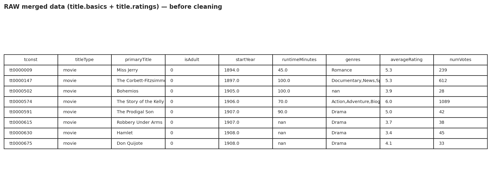
Missing — add assets/raw_data_sample.png')">Raw rows still carry IMDb's \N null marker, string-typed years, and
comma-packed genre strings.
After cleaning
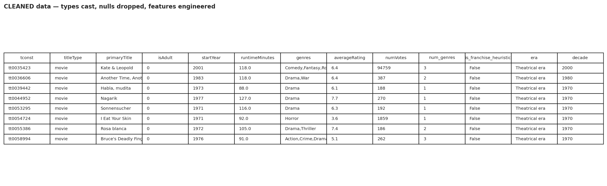
Missing — add assets/clean_data_sample.png')">Nulls resolved, year/runtime cast to numeric, and three engineered columns added:
num_genres (count of tagged genres), is_franchise_heuristic (title-pattern
based sequel/franchise flag — approximate, not ground truth), and era (theatrical vs.
streaming, split at 2015).
Exploratory visualizations
Fourteen visualizations in total: ten map directly to the research questions from the Introduction, four are cross-cutting or supporting context.
Overall rating distribution
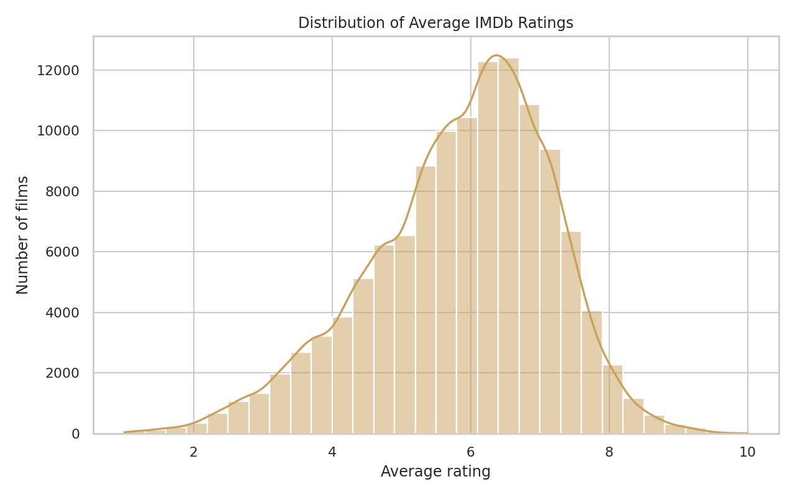
Q1 — Rating by genre
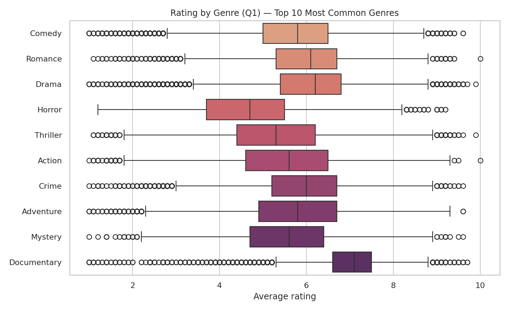
Q2 — Mean rating by release year
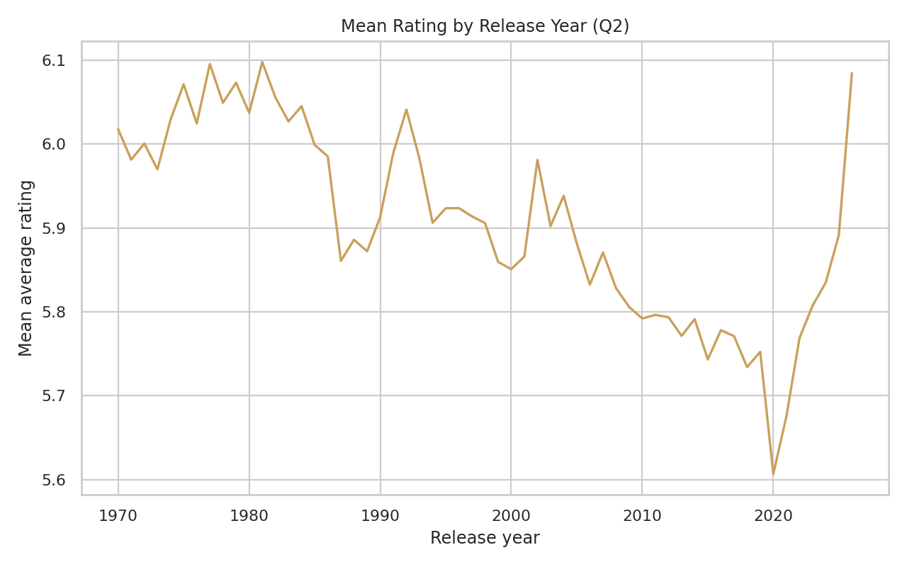
Q3 — Runtime vs. rating
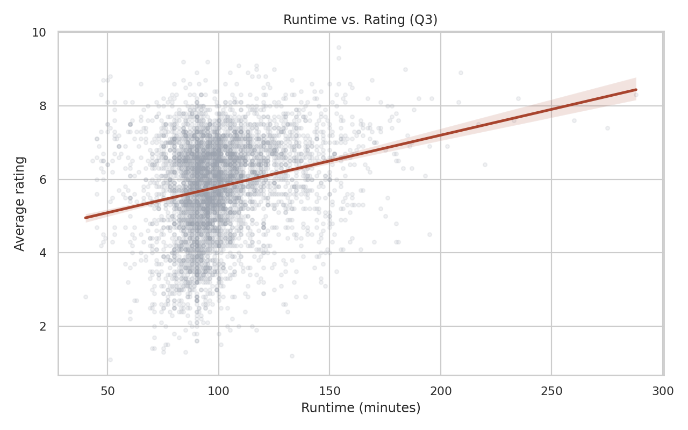
Q4 — Rating by release month
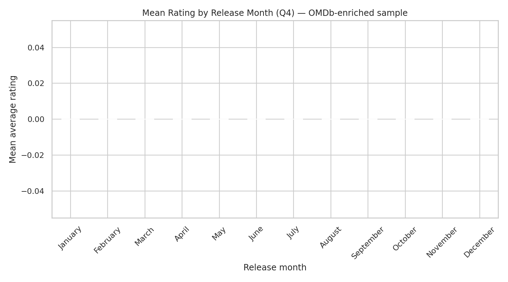
Based on the OMDb-enriched sample only — the bulk IMDb datasets only record release year, not month.
Q5 — Vote count vs. rating
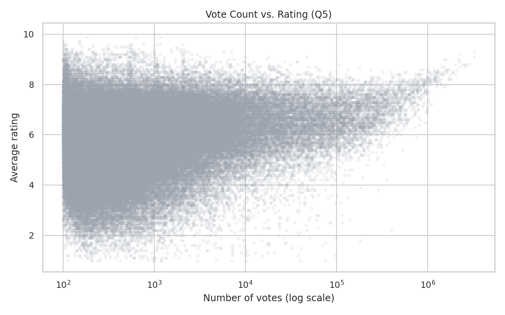
Q6 — Franchise vs. standalone films
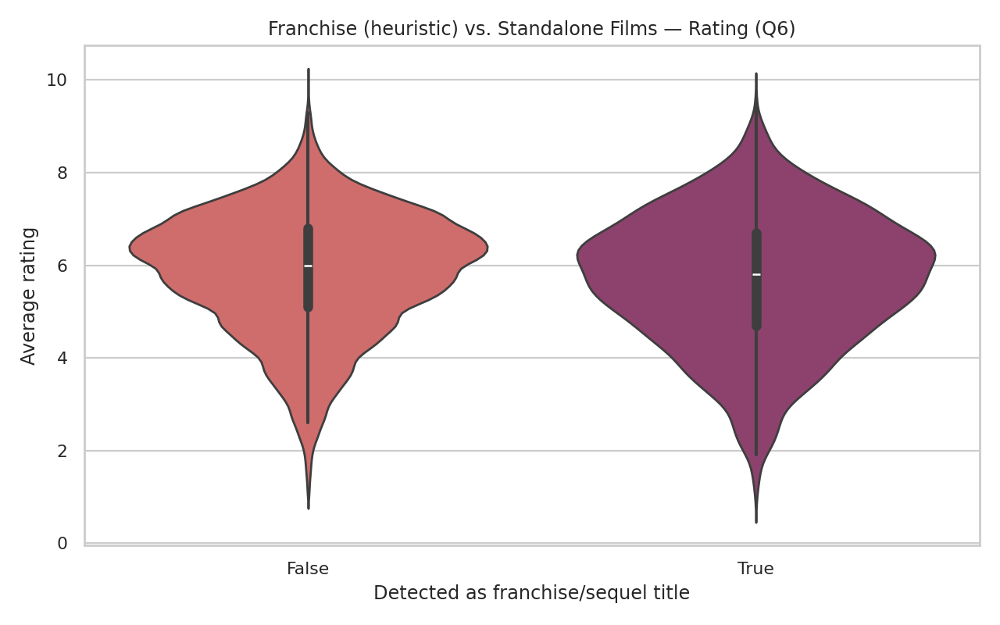
Franchise status here is a title-pattern heuristic (roman numerals, "Part 2", "Chapter II", etc.) — not verified against an actual franchise/collection database, so treat this as approximate.
Q7 — Rating by country of origin
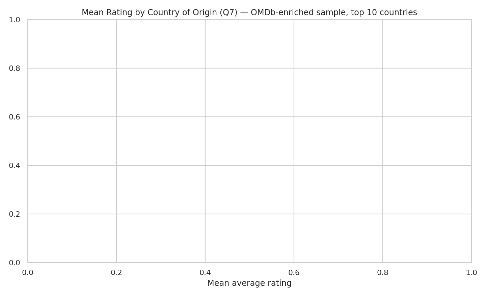
Based on the OMDb-enriched sample, top 10 most frequent countries.
Q8 — International release breadth vs. rating
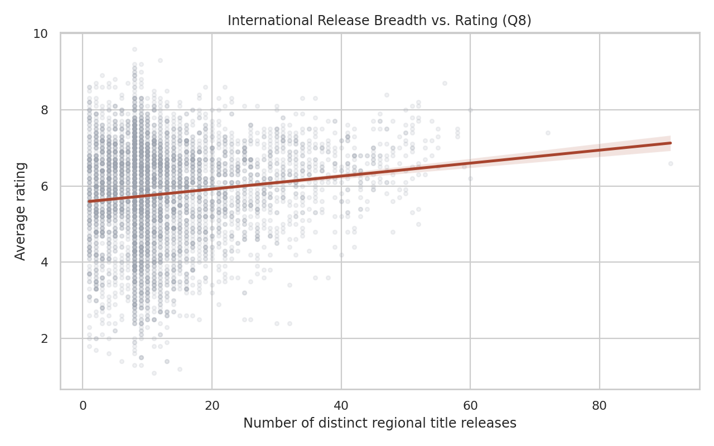
Q9 — Number of genres tagged vs. rating
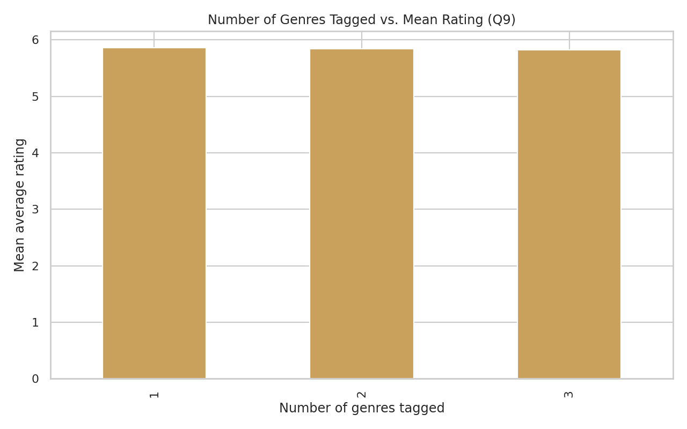
Q10 — Theatrical era vs. streaming era
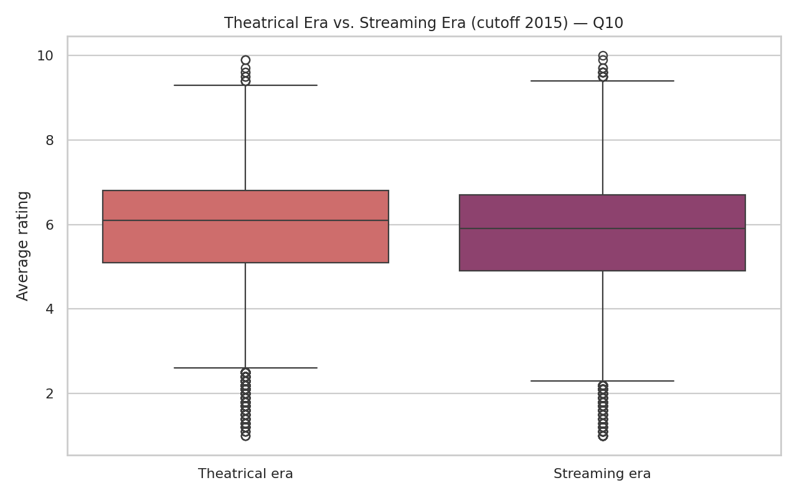
Split at 2015, chosen as the point streaming platforms' original content became mainstream.
Cross-cutting — Feature correlation heatmap
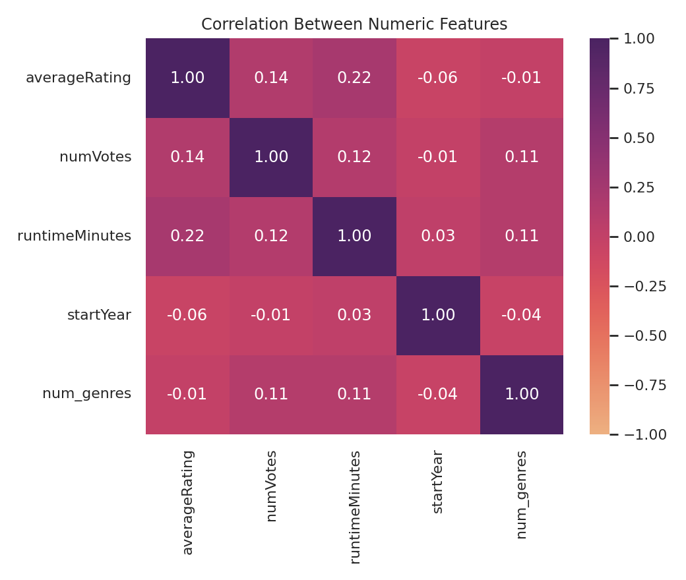
Cross-cutting — Missing data (pre-cleaning)
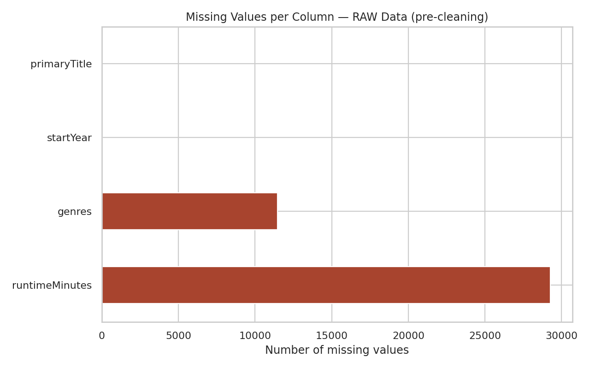
Bonus — Director filmography size vs. mean rating
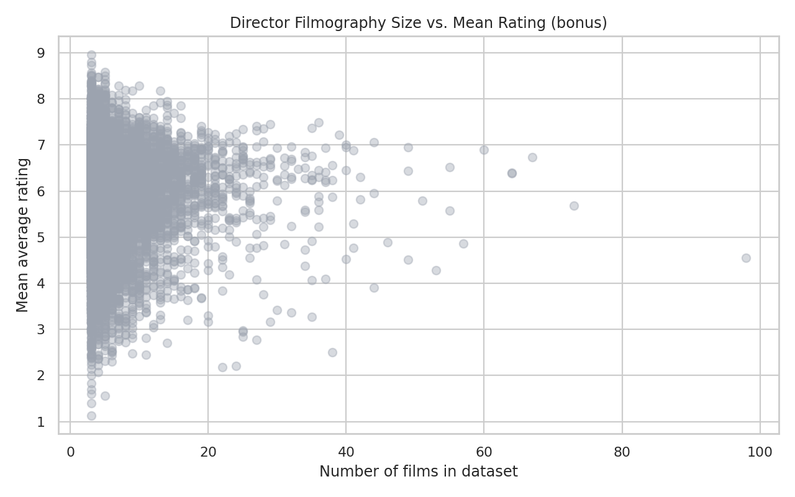
Limited to directors with at least 3 films in the sampled dataset.
Summary statistics
| Feature | Mean | Std | Min | Max |
|---|---|---|---|---|
| Average rating | 5.841834592095839 | 1.313725124241618 | 1 | 10 |
| Number of votes | 9961.879370401719 | 63206.26859966402 | 100 | 3238362 |
| Runtime (min) | 100.82044729474575 | 21.534411106465434 | 40 | 300 |
| Release year | 2007.7472898626213 | 14.637269032482083 | 1970 | 2026 |
| Number of genres | 2.0066980272153137 | 0.8307921841198117 | 1 | 3 |
Values from the summary_statistics output file.
Data & code availability
The full raw and cleaned datasets, the OMDb-enriched sample, and the supporting akas/director lookups
are kept as local working files rather than published to this repository, both because IMDb's
non-commercial license restricts redistribution of its data, and because the files are too large for a
standard GitHub repository. The complete collection-and-cleaning script is available in this project's
scripts/ folder for full reproducibility.